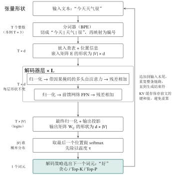
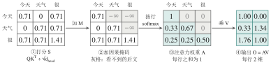
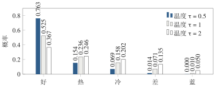

2.3 一次推理的完整过程
输入“今天天气很”，模型输出“好”。这中间，模型内部到底做了哪些计算？本节跟着这句话走完一次完整的前向计算：分词器把文字切成词元编号，嵌入层把编号换成向量，向量依次穿过 \(L\) 个解码器层——每层先用自注意力在位置之间交换信息，再用前馈网络在每个位置上加工——最后由输出层给词表中每个词元打分，经 softmax 变成概率，再按解码策略抽出一个词元，追加到输入末尾，进入下一轮。每一步都配有可以手算的小例子。结论是：模型每生成一个词元，都要把这条链路走一遍；理解了这条链路，就理解了上下文长度、温度参数、KV 缓存等概念从何而来。
图 2-4 是解码器模型（GPT 类模型，见第 2.5.3 小节）生成一个词元的完整数据流，左侧标出了每一步输出的张量形状。记号沿用全书约定：\(T\) 是输入的词元数，\(d\) 是隐藏维度（每个词元用多少个数表示），\(\lvert\mathcal{V}\rvert\) 是词表大小，\(L\) 是层数。为便于手算，本节假设分词器把“今天天气很”切成“今天”“天气”“很”三个词元，即 \(T=3\)。

图 2-4 解码器模型生成一个词元的完整数据流。左侧为每一步输出的张量形状（T：词元数，d：隐藏维度，|V|：词表大小，L：层数），各步依次在 2.3.1～2.3.7 小节讲解；右侧回环表示自回归生成
辨析
本节标题中的“推理”指模型的一次前向运行（inference），即用训练好的参数计算输出；它与“推理模型”“推理能力”中的“推理”（reasoning，多步逻辑思考）不是一回事。同样，“解码”至少有三种意思：解码器是一种网络结构（第 2.5 节）；解码阶段是推理服务中逐个生成词元的运行阶段（第 4.4.1 小节）；解码策略是从概率分布中选出一个词元的规则（第 2.3.6 小节）。
2.3.1 词元化：把文字切成编号
神经网络只能处理数字，第一步是用分词器（tokenizer）把文本切成一个个词元（token），再把每个词元映射为一个整数编号。切分的粒度是一个权衡：按字符切，词表很小，但序列很长，每个词元携带的信息很少；按整词切，序列短，但词表巨大，而且遇到没见过的新词就无从下手。现代大模型普遍采用介于两者之间的子词（subword）切分，最常用的算法是字节对编码（Byte Pair Encoding，BPE）[24]。
BPE 的训练过程是：从单个字符出发，统计语料中所有相邻符号对的出现次数，把最常见的一对合并成一个新符号，加入词表；重复这一过程，直到词表达到预定大小。
例 2-3 BPE 的前五次合并
语料中 low 出现 5 次，lower 2 次，newest 6 次，widest 3 次。用 </w> 标记词尾，初始切分为单个字符。出现次数相同时，取语料中先出现的一对。
| 步骤 | 合并对 | 次数（从哪来） | 合并后的切分 |
|---|---|---|---|
| 0 | — | — | l o w </w>；l o w e r </w>；n e w e s t </w>；w i d e s t </w> |
| 1 | e+s |
9 = newest 6 + widest 3 | n e w es t </w>；w i d es t </w> |
| 2 | es+t |
9，同上 | n e w est </w>；w i d est </w> |
| 3 | est+</w> |
9，同上 | n e w est</w>；w i d est</w> |
| 4 | l+o |
7 = low 5 + lower 2 | lo w </w>；lo w e r </w> |
| 5 | lo+w |
7，同上 | low </w>；low e r </w> |
第 1 步时，e s、s t、t </w> 都出现 9 次，按规则取最先出现的 e s；w e（newest 6 + lower 2 = 8）以一次之差落选。五次合并后，词表多了 es、est、est</w>、lo、low 五个子词。此时遇到语料中没有的词 lowest，也能切成 low + est</w>，两个子词都带着意义：“低”和“最高级”。
GPT-2 之后的模型多采用字节级 BPE：先把文本转为 UTF-8 字节，再在字节上合并，这样任何语言、任何符号都能被切分，不会出现“未登录词”。常见模型的词表大小从 GPT-2 的 50 257、LLaMA 的 32 000，增长到 Llama 3 的 128 256[25]。
辨析
词元不等于字，也不等于词。一个常见的中文词可能是一个词元，一个生僻字却可能被拆成几个字节词元。模型的上下文长度、API 的计费、缩放定律中的数据量 \(D\)，都按词元计算。分词也解释了一些“怪现象”：问模型“strawberry 里有几个 r”，它容易答错，主要原因之一是它看到的是几个子词编号，而不是一个个字母。
2.3.2 词嵌入与位置信息
每个词元编号通过查表变成一个 \(d\) 维向量。嵌入矩阵 \(E\) 的形状是 \(\lvert\mathcal{V}\rvert \times d\)，第 \(i\) 行就是编号为 \(i\) 的词元的向量；这个矩阵和模型的其他参数一样是训练出来的。输入 \(T\) 个词元，得到一个 \(T\times d\) 的矩阵 \(X\)，每一行对应一个词元。以 GPT-3 为例，\(d=12\,288\)，词表约 5 万，嵌入矩阵本身就有约 6.2 亿个参数（\(50\,257\times12\,288\)）。
下一小节的注意力运算本身不区分顺序：“狗咬人”和“人咬狗”在它看来是同一组向量。因此还要注入位置信息。原始 Transformer 把一组按位置计算的正弦、余弦向量加到嵌入上（第 2.5.1 小节）；今天的大模型多用旋转位置编码（RoPE），在注意力计算时把查询和键向量按位置旋转一个角度，使注意力分数只依赖两个词元的相对距离[26]。
2.3.3 自注意力：让每个位置读取其他位置
嵌入之后，矩阵 \(X\) 依次穿过 \(L\) 个结构相同的解码器层。每层的第一个子层是自注意力（self-attention），它要解决的问题是：“很”这个位置要预测下一个词，应当从前文的哪些位置取信息、各取多少？
一句话机制 每个位置提出一个“查询”，与所有位置的“键”比较相似度，按相似度对所有位置的“值”加权平均，作为本位置的新表示。具体地，\(X\) 先经过三个可学习的线性变换，得到查询矩阵 \(Q=XW^Q\)（我在找什么）、键矩阵 \(K=XW^K\)（我能提供什么）和值矩阵 \(V=XW^V\)（我的内容）。然后计算缩放点积注意力[15]： \[\operatorname{Attention}(Q,K,V) = \operatorname{softmax}\Bigl(\frac{QK^{\top}}{\sqrt{d_{\mathrm{head}}}} + M\Bigr)V, \tag{2-11}\] 分三步完成（图 2-5）：
打分：\(S=QK^{\top}/\sqrt{d_{\mathrm{head}}}\)，形状 \(T\times T\)，第 \(i\) 行第 \(j\) 列表示位置 \(i\) 对位置 \(j\) 的关注程度；
掩码与归一化：加上掩码矩阵 \(M\) 后按行做 softmax，得到注意力权重矩阵 \(A\)，每行之和为 1；
加权求和：\(O=AV\)，第 \(i\) 行是所有值向量按第 \(i\) 行权重的加权平均。
为什么除以 \(\sqrt{d_{\mathrm{head}}}\) 设 \(\boldsymbol{q}\)、\(\boldsymbol{k}\) 的各分量独立、均值为 0、方差为 1，则点积 \(\boldsymbol{q}\cdot\boldsymbol{k}=\sum_{i=1}^{d_{\mathrm{head}}} q_ik_i\) 的方差为 \(d_{\mathrm{head}}\)。维度越高，分数的绝对值越大，softmax 越接近“只有一个 1、其余全是 0”的饱和状态，梯度几乎为零。除以 \(\sqrt{d_{\mathrm{head}}}\) 把方差拉回 1，训练得以稳定。原论文把每个头的维度记为 \(d_k\)，即本书的 \(d_{\mathrm{head}}\)。
因果掩码 解码器模型生成第 \(t\) 个词元时，只能看到前 \(t-1\) 个词元；训练时也必须遵守这一点，否则模型会“偷看答案”。做法是令掩码 \(M_{ij}=0\)（\(j\le i\)）、\(M_{ij}=-\infty\)（\(j>i\)）：上三角位置的分数变成 \(-\infty\)，softmax 之后权重为 0。这称为因果掩码（causal mask）。

图 2-5 带因果掩码的缩放点积注意力的三步计算（数值取自例 2-4，保留两位小数）。行是发出查询的位置，列是被查询的位置；掩码把后文的分数置为 −∞，softmax 后其权重为 0
例 2-4 手算一次缩放点积注意力
三个词元“今天”“天气”“很”，单头，\(d_{\mathrm{head}}=2\)。为便于计算，取 \(Q=K\)（实际中 \(W^Q\ne W^K\)）： \[Q=K=\begin{bmatrix}1&0\\0&1\\1&1\end{bmatrix},\qquad V=\begin{bmatrix}1&0\\0&2\\3&1\end{bmatrix}.\] 先不加掩码（编码器的双向注意力），再加因果掩码（解码器）。
| 步骤 | 算什么 | 算式 | 结果 | 这个数从哪来 |
|---|---|---|---|---|
| 1 | 点积，第 3 行 | \((1,1)\cdot(1,0)\)，\((1,1)\cdot(0,1)\)，\((1,1)\cdot(1,1)\) | 1，1，2 | \(Q\) 第 3 行与 \(K\) 各行 |
| 2 | 缩放 | 每个数 \(\div\sqrt2\) | 0.707，0.707，1.414 | \(d_{\mathrm{head}}=2\) |
| 3 | 取指数 | \(e^{0.707}\)，\(e^{0.707}\)，\(e^{1.414}\) | 2.028，2.028，4.113 | 第 2 步 |
| 4 | 归一化 | 各数 \(\div(2.028+2.028+4.113)\) | 0.248，0.248，0.503 | 第 3 步，和为 8.169 |
| 5 | 加权求和 | \(0.248\times(1,0)+0.248\times(0,2)+0.503\times(3,1)\) | \((1.759,1.000)\) | \(V\) 的三行 |
| 6 | 掩码第 2 行 | 只剩 \((0,0.707)\)：\(1\div(1+2.028)\)，\(2.028\div(1+2.028)\) | 0.330，0.670，0 | \(M_{23}=-\infty\) |
| 7 | 掩码后输出 | \(0.330\times(1,0)+0.670\times(0,2)\) | \((0.330,1.340)\) | 第 6 步 |
对第 1、2 行重复第 1～5 步，得到不加掩码时的完整结果： \[S\approx\begin{bmatrix}0.707&0&0.707\\0&0.707&0.707\\0.707&0.707&1.414\end{bmatrix},\ A\approx\begin{bmatrix}0.401&0.198&0.401\\0.198&0.401&0.401\\0.248&0.248&0.503\end{bmatrix},\ O=AV\approx\begin{bmatrix}1.604&0.797\\1.401&1.203\\1.759&1.000\end{bmatrix}.\] 加因果掩码后，第 1 行只能看见自己，权重为 \((1,0,0)\)，输出就是自己的值向量 \((1,0)\)；第 2 行见第 6、7 步；第 3 行不变。
数据流向：\(Q,K\to S\to(+M)\to A\)；\(A,V\to O\)。“很”的查询 \((1,1)\) 与自己的键最相似，约一半注意力（0.503）给了自己，其余平分给前两个词元；它的输出是三个值向量的加权平均，把整句的信息按相关程度“混合”进了当前位置。最后一个位置本来就能看到全部前文，所以加不加因果掩码，它的结果都一样。
多头注意力 一组 \(Q\)、\(K\)、\(V\) 只能表达一种“关注方式”。多头注意力把隐藏维度 \(d\) 切成 \(H\) 份，每个头用自己的 \(W_i^Q\)、\(W_i^K\)、\(W_i^V\) 在 \(d_{\mathrm{head}}=d/H\) 维的子空间里独立计算注意力，再把各头的输出拼接，经输出矩阵 \(W^O\) 映射回 \(d\) 维： \[\operatorname{MultiHead}(X) = \operatorname{Concat}(\mathrm{head}_1,\dots,\mathrm{head}_H)\,W^O,\qquad \mathrm{head}_i = \operatorname{Attention}(XW_i^Q,\,XW_i^K,\,XW_i^V). \tag{2-12}\] 不同的头可以学到不同类型的关系，例如有的头跟踪主谓搭配，有的头跟踪代词指代。原始 Transformer 取 \(d=512\)、\(H=8\)，每头 64 维。
代价随长度平方增长 分数矩阵 \(S\) 的形状是 \(T\times T\)，注意力的计算量和中间结果都随序列长度的平方增长。上下文从 4K 扩展到 128K，\(T\) 增大 32 倍，\(S\) 增大约 1000 倍。这是长上下文模型的核心难题。FlashAttention 通过分块计算避免把完整的 \(S\) 写入显存，缓解了显存和带宽压力（第 4.4.3 小节），但计算量的平方关系仍然存在。
2.3.4 前馈网络、残差流与归一化
每层的第二个子层是前馈网络（Feed-Forward Network，FFN）。注意力负责在位置之间交换信息，FFN 则对每个位置单独做同样的非线性变换：先升维到 \(d_{\mathrm{ff}}\)（通常为 \(4d\)），经过激活函数（原论文用 ReLU，即 \(\max(0,x)\)），再降回 \(d\)： \[\operatorname{FFN}(\boldsymbol{x}) = \max(0,\ \boldsymbol{x}W_1+\boldsymbol{b}_1)\,W_2+\boldsymbol{b}_2 . \tag{2-13}\] 可解释性研究发现，模型的大量事实性“知识”与 FFN 的参数关系密切[27]。
两个子层都包在残差连接和归一化之中。现代大模型多采用前置归一化（Pre-LN）的写法： \[\boldsymbol{x} \leftarrow \boldsymbol{x} + \operatorname{Attention}\bigl(\operatorname{Norm}(\boldsymbol{x})\bigr),\qquad \boldsymbol{x} \leftarrow \boldsymbol{x} + \operatorname{FFN}\bigl(\operatorname{Norm}(\boldsymbol{x})\bigr). \tag{2-14}\] 一个有用的理解方式是把 \(\boldsymbol{x}\) 看成一条贯穿所有层的残差流（residual stream）：每个注意力子层从其他位置“读取”信息并“写回”残差流，每个 FFN 子层在当前位置上加工信息并写回。残差连接让梯度可以沿“\(+\boldsymbol{x}\)”这条捷径直接穿过几十上百层，归一化让每层输入的数值范围保持稳定，二者是把网络堆深的前提。无论穿过多少层，形状始终是 \(T\times d\)。可解释性研究还发现，浅层更多处理词法和局部句法，深层更多处理语义和与任务相关的信息。
有了每层的结构，就可以估算模型的参数量。注意力有 \(W^Q\)、\(W^K\)、\(W^V\)、\(W^O\) 四个 \(d\times d\) 矩阵，共 \(4d^2\) 个参数；FFN 有 \(d\times4d\) 和 \(4d\times d\) 两个矩阵，共 \(8d^2\) 个参数；偏置和归一化参数很少，可以忽略。于是 \[N \approx 12\,L\,d^{2}\ \ (\text{不含嵌入}),\qquad N_{\mathrm{emb}} = \lvert\mathcal{V}\rvert \, d . \tag{2-15}\]
例 2-5 估算 GPT-3 的参数量
GPT-3 有 \(L=96\) 层，\(d=12\,288\)，词表 \(\lvert\mathcal{V}\rvert =50\,257\)，输入嵌入与输出矩阵共享[19]。估算它的参数量。
| 步骤 | 算什么 | 算式 | 结果 | 这个数从哪来 |
|---|---|---|---|---|
| 1 | 每层注意力 | \(4\times12\,288^2\) | \(6.04\times10^{8}\) | \(W^Q,W^K,W^V,W^O\) 各 \(d\times d\) |
| 2 | 每层 FFN | \(8\times12\,288^2\) | \(1.21\times10^{9}\) | \(d_{\mathrm{ff}}=4d\)，两个矩阵 |
| 3 | 全部层 | \(12\times96\times12\,288^{2}\) | \(1.739\times10^{11}\) | 式 （2-15），\(L=96\) |
| 4 | 嵌入 | \(50\,257\times12\,288\) | \(6.2\times10^{8}\) | \(\lvert\mathcal{V}\rvert \times d\) |
| 5 | 合计 | \(1.739\times10^{11}+0.006\times10^{11}\) | \(1.745\times10^{11}\) | 第 3、4 步 |
数据流向：\(L,d\to\) 每层 \(12d^2\to\) 乘层数 \(\to\) 加嵌入。结果约 1745 亿，与公布的 1750 亿基本吻合；嵌入只占约 0.4%，参数主要在各层的矩阵里。
2.3.5 输出层：从向量到概率
最后一层的输出再经过一次归一化，乘以一个 \(d\times\lvert\mathcal{V}\rvert\) 的输出矩阵 \(W_U\)（许多模型让它与嵌入矩阵共享参数），得到每个位置上对整个词表的打分，称为 logits，形状为 \(T\times\lvert\mathcal{V}\rvert\)。生成下一个词元只需要最后一个位置的 logits \(\boldsymbol{z}\)，经 softmax 变成概率分布： \[p_i = \frac{e^{z_i}}{\sum_{j=1}^{\lvert\mathcal{V}\rvert } e^{z_j}} . \tag{2-16}\]
辨析
训练与推理走的是同一条前向链路，用法却不同。训练时，整段文本一次送入，因果掩码保证每个位置只看到前文，于是每个位置的 logits 都用来预测它的下一个词元，长度为 \(T\) 的文本一次就产生约 \(T\) 个训练信号（准确地说是 \(T-1\) 个，最后一个位置之后没有可预测的词元），按式 （2-5） 求平均损失。推理时只取最后一个位置的分布来选下一个词元，前面位置的输出只是“顺带”算出的中间结果。
2.3.6 从概率到词元：温度与采样
有了概率分布，还要决定真正输出哪个词元，这一步称为解码，所用的规则称为解码策略。下面用一组数说明最常用的几种。假设对“今天天气很”，模型给出五个候选词元的 logits：好 3.0，热 2.2，冷 1.8，差 1.0，蓝 \(-1.0\)（其余词元的分数低到可以忽略）。
贪心解码 每步取概率最大的词元，这里是“好”。结果确定、可复现，但容易生成重复、平淡的文字。
温度采样 按概率随机抽取，并用温度 \(\tau\) 调节分布的尖锐程度： \[p_i(\tau) = \frac{e^{z_i/\tau}}{\sum_{j} e^{z_j/\tau}} . \tag{2-17}\] 把它与玻尔兹曼分布式 （2-10） 对照：只要把“负能量”换成“分数” \(z_i\)，把 \(kT_{\mathrm{K}}\) 换成 \(\tau\)，两者就是同一个式子。\(\tau<1\) 时分数差距被放大，分布更尖锐，生成更保守；\(\tau>1\) 时分布更平坦，生成更多样，也更容易出错；\(\tau\to0\) 时退化为贪心解码（图 2-6）。

图 2-6 同一组 logits（好 3.0，热 2.2，冷 1.8，差 1.0，蓝 −1.0）在三种温度下的 softmax 概率。温度越低，概率越集中于“好”；温度越高，长尾的“蓝”越有机会被抽中
截断采样 为了避免抽到长尾的异常词元，实际中常在采样前先截断候选集，再在剩下的词元上重新归一化：
Top-K 采样：只保留概率最高的 \(k\) 个词元；
Top-P 采样（又称核采样）：按概率从高到低累加，保留累计概率首次达到 \(p\) 的最小词元集合。
例 2-6 温度与截断采样
用上面的五个 logits，求 \(\tau=1\) 时的概率分布，以及 \(k=2\) 的 Top-K、\(p=0.9\) 的 Top-P 截断后的概率；再看 \(\tau=0.5\) 和 \(\tau=2\) 时“好”和“蓝”的概率。
| 步骤 | 算什么 | 算式 | 结果 | 这个数从哪来 |
|---|---|---|---|---|
| 1 | 指数 | \(e^{3.0}\)，\(e^{2.2}\)，\(e^{1.8}\)，\(e^{1.0}\)，\(e^{-1.0}\) | 20.09，9.03，6.05，2.72，0.37 | logits，\(\tau=1\) |
| 2 | 归一化 | 各数 \(\div(20.09+9.03+6.05+2.72+0.37)\)，分母 \(=38.25\) | 0.525，0.236，0.158，0.071，0.010 | 式 （2-17） |
| 3 | Top-K（\(k=2\)） | 保留“好、热”：\(0.525\div(0.525+0.236)\) | 好 \(0.690\)，热 \(0.310\) | 第 2 步前两名 |
| 4 | 累计概率 | \(0.525\)；\(0.525+0.236\)；\(+0.158\) | 0.525，0.761，0.919 | 第 2 步按序累加 |
| 5 | Top-P（\(p=0.9\)） | 第 3 个时首次 \(\ge0.9\)，保留三个：\(0.525\div0.919\) 等 | 好 \(0.571\)，热 \(0.257\)，冷 \(0.172\) | 第 4 步 |
| 6 | \(\tau=0.5\) | logits 先 \(\div0.5\)，再重复第 1、2 步 | 好 \(0.763\)，蓝 \(0.000\) | 分数差放大 |
| 7 | \(\tau=2\) | logits 先 \(\div2\)，再重复第 1、2 步 | 好 \(0.367\)，蓝 \(0.050\) | 分数差缩小 |
数据流向：logits \(\to(\div\tau)\to\) 指数 \(\to\) 归一化 \(\to\) 截断 \(\to\) 重新归一化 \(\to\) 抽样。\(\tau=2\) 时“蓝”的概率升到 0.050，大约每 20 次就会抽出一次“今天天气很蓝”这样的病句。这就是高温采样更“有创意”、也更容易出错的原因，也是第 2.4.7 小节所说幻觉的成因之一。
Top-K 与 Top-P 的区别在于候选集的大小是否随分布变化：Top-K 永远留 \(k\) 个；Top-P 在模型很有把握时只留一两个，没把握时留得更多。常见的工程经验是：代码生成、事实问答用低温度（0～0.3），创意写作用较高温度（0.7～1.0）并配合 \(p\approx0.9\)。束搜索、重复惩罚等其他解码策略，以及各策略的系统比较，见第 3.9.5 小节。
2.3.7 自回归循环与 KV 缓存
选出“好”之后，把它追加到输入末尾，再把图 2-4 的链路走一遍，生成下一个词元；如此循环，直到生成结束符或达到长度上限。这种“每次生成一个、生成后接回输入”的方式称为自回归（auto-regressive）生成。
如果每轮都从头计算，生成第 \(t\) 个词元就要把前面 \(t-1\) 个位置重算一遍。由于因果掩码保证前文位置的计算结果不受后文影响，每一层中前文的键和值算出后就不再改变，可以保存下来重复使用，这就是 KV 缓存（Key-Value cache）。于是一次请求分成两个阶段：先一次性并行处理整个输入并写入缓存（预填充），再每步只为一个新词元计算并追加缓存（解码阶段）。KV 缓存用显存换计算，它的大小随序列长度和并发数线性增长；估算公式及其与 GQA 的关系见第 3.9.3 小节，缓存在推理系统中的管理与相关优化见第 4.4.2～4.4.3 小节。
本节要点
一次前向：词元化 \(\to\) 嵌入（\(T\times d\)）\(\to\) \(L\) 层“注意力 + FFN”（形状不变）\(\to\) 输出投影（\(T\times\lvert\mathcal{V}\rvert\)）\(\to\) 取最后位置 softmax \(\to\) 解码策略选出一个词元。
注意力 \(=\operatorname{softmax}(QK^{\top}/\sqrt{d_{\mathrm{head}}}+M)V\)；因果掩码让每个位置只看前文；代价随 \(T^2\) 增长。
每层约 \(12d^2\) 个参数，模型约 \(12Ld^2\)；温度 \(\tau\) 调尖锐程度，Top-K/Top-P 截断长尾。